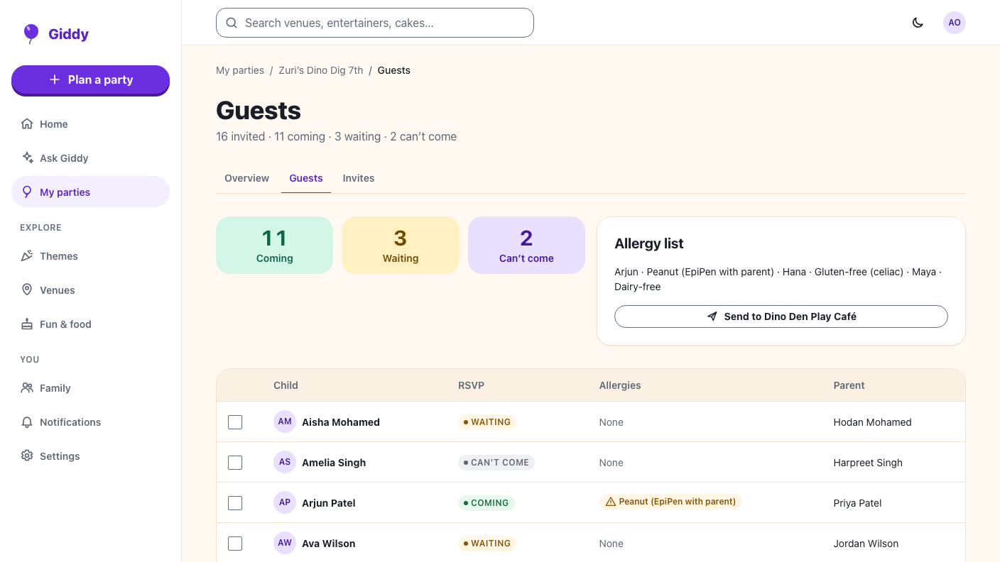
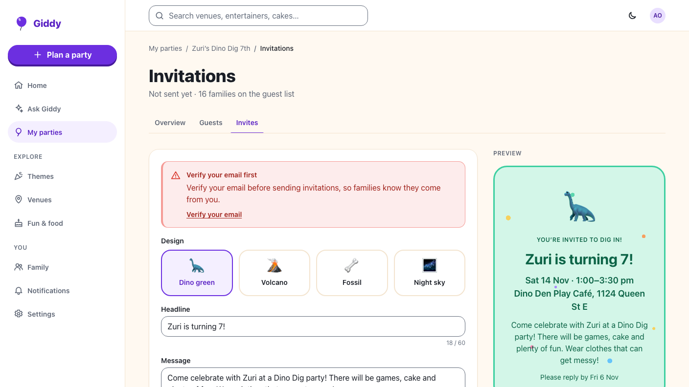
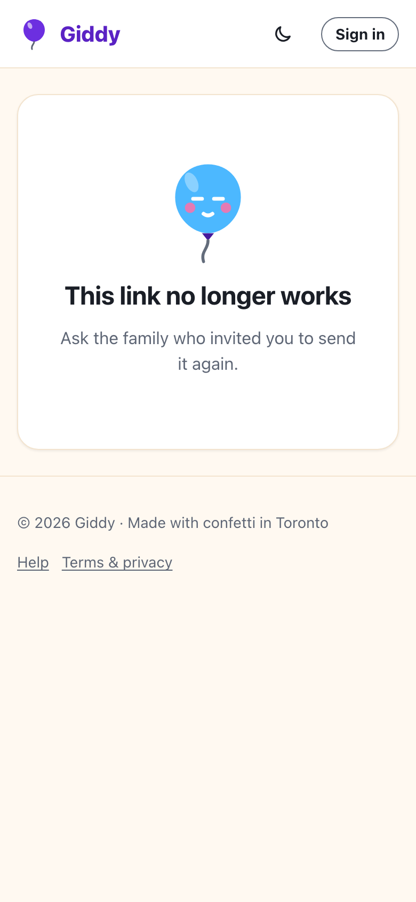
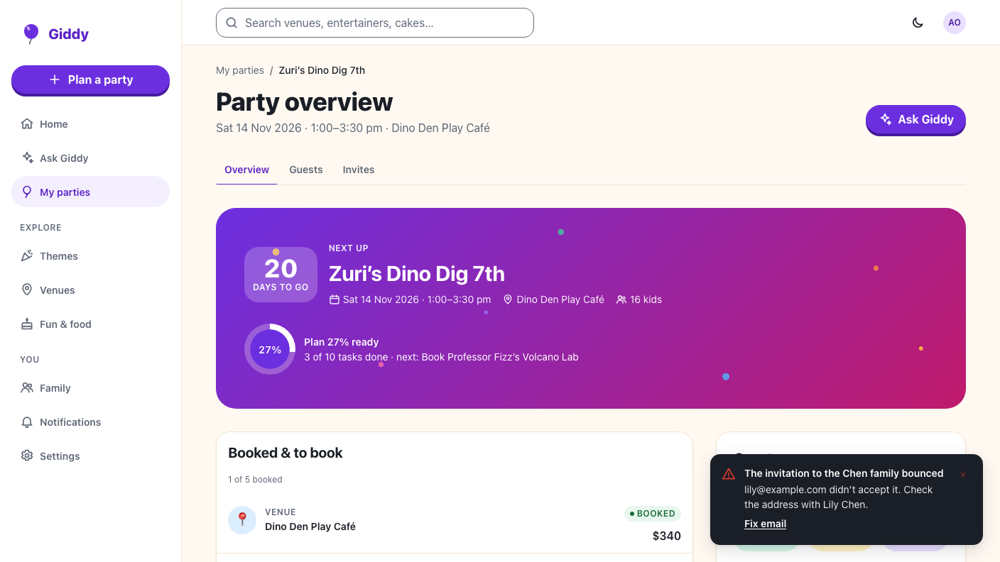

Giddy · Video 06
Send invitations and track RSVPs
Private links, account-free replies, news as it happens
Private links, account-free replies, news as it happens

Giddy's draft from the party; counters for 60 and 280 characters; a test to yourself; the automatic reminder date.

Pre-filled with what Giddy knows; the allergy is repeated back; a calendar file and Change my reply.

Unknown, replaced or deleted-party links answer 404 with no party details.
Polled every three seconds; counts refresh; a new allergy offers to share the list with the venue.

A selection bar with names; info, then success; families who can't be reached are named and stay on screen.
Guests, the draft, test send, channels, verified email, private links, replies, calendar, live updates, reminders, bounces, allergy list.
The same flows against the fake API at 360 and 1280 px, with axe on every page. Recordings use the same fake.
Next: build the guest list